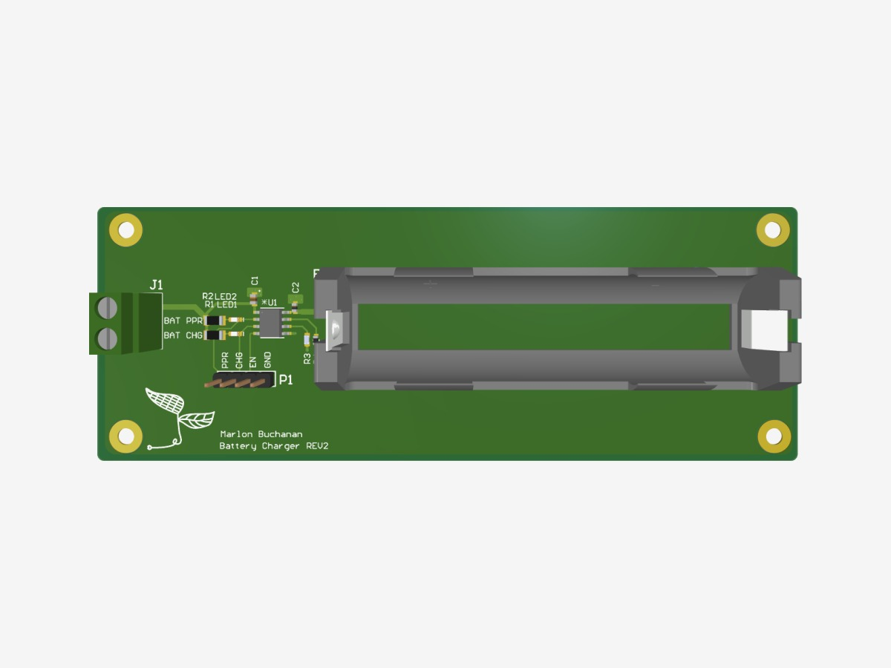
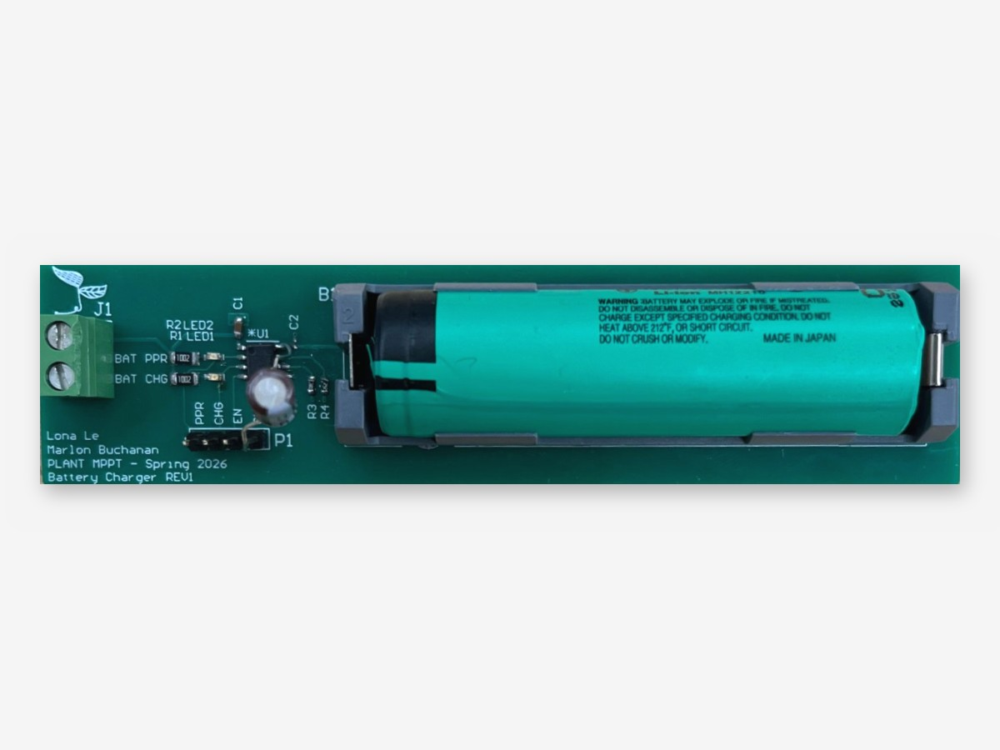
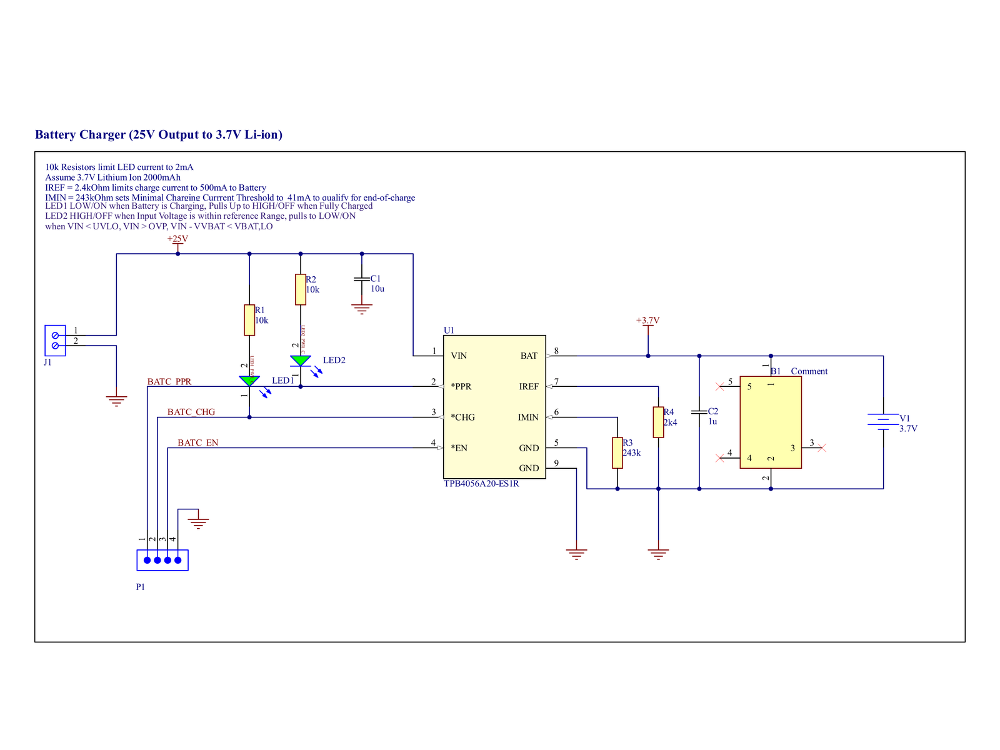
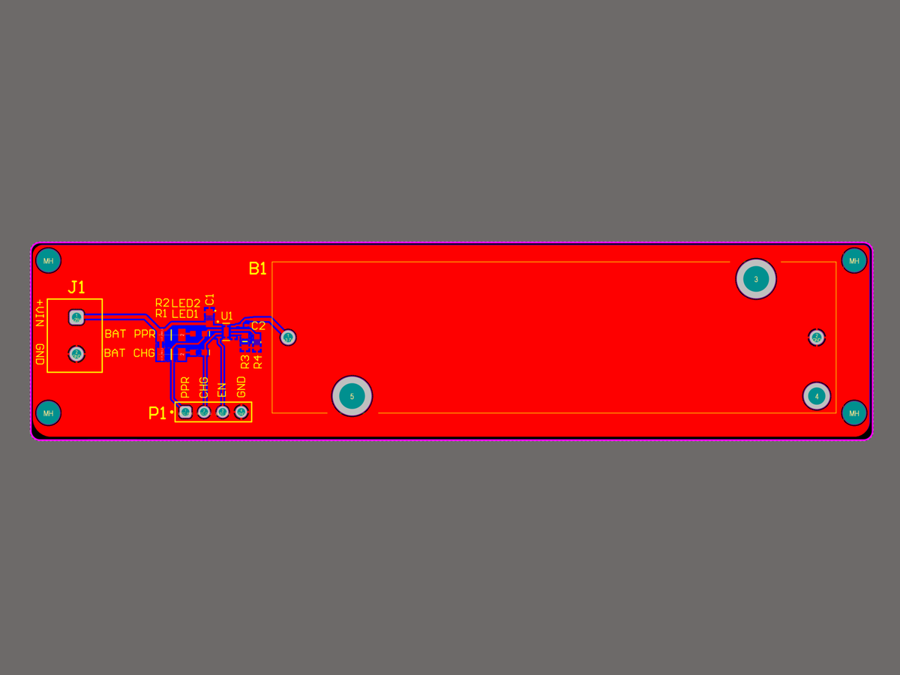
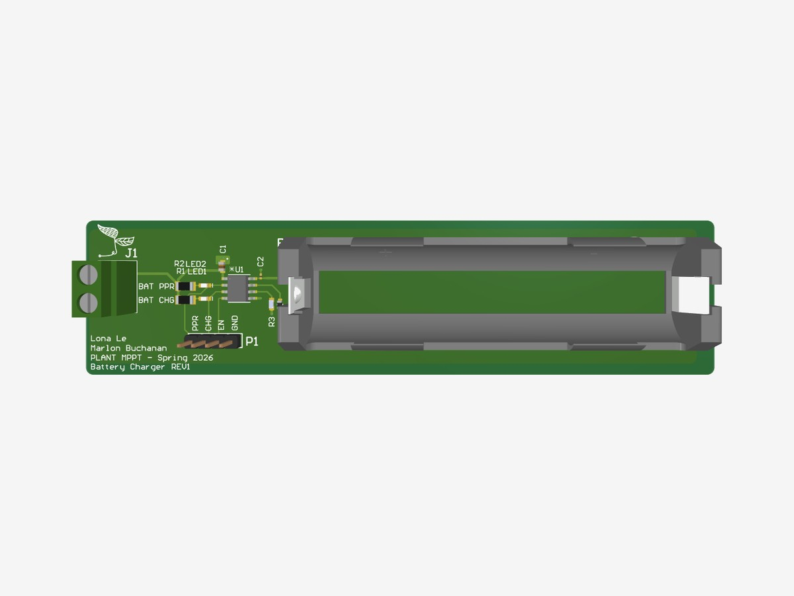

18650 Lithium Battery Charger Board
Single-cell Li-ion charger breakout for the PLANT MPPT capstone
A breakout board that charges a single 18650 lithium-ion cell from the MPPT converter's 25 V output. It is built around the 3PEAK TPB4056A20, a linear charger IC, following the datasheet's typical application circuit.
The design was simple on purpose. The real value was in what went wrong during assembly, and in learning why a linear charger was the wrong fit for this system. See the main MPPT project →
- Role Schematic, layout, and assembly
- Team Team PLANT capstone (board co-credited with Lona Le)
- When Spring 2026
- Parts TPB4056A20 linear charger, Keystone 1043P 18650 holder
- Tools Altium Designer





Highlights
- Set a 500 mA charge current with RIREF = 2.4 kΩ, from the datasheet relation IBAT = 1200 / RIREF
- Set end-of-charge at 43 mA with RIMIN = 243 kΩ, the nearest standard value to the 285.7 kΩ the 35 mA typical called for
- Added charge-status and power-good LEDs on the open-drain outputs (10 kΩ, about 2 mA) and broke the status and enable pins out to a header for the microcontroller
- Laid out a two-layer board with a solid ground plane on layer 2 and a ground pour on layer 1
- Recovered from a footprint mistake by reworking in a substitute capacitor, then traced the root cause to an imperial/metric package mix-up
Design Process
1. Designing from the datasheet
The TPB4056A20 needs only a handful of parts, so I followed its typical application circuit and sized the two programming resistors from the datasheet equations.
The charge current is set by RIREF: 1200 / 500 mA gives 2.4 kΩ. The end-of-charge threshold is set by RIMIN: the 35 mA typical calls for 285.7 kΩ, and the 243 kΩ standard value gives 43 mA.
The open-drain PPR and CHG outputs drive status LEDs and also go to a header, along with the enable pin, so a microcontroller can read charge state and turn charging off.

2. Layout
Layer 2 is a solid ground plane, and layer 1 carries a ground pour around the charger. The board is DC apart from the enable line, so I used thermal reliefs on the pours to make hand soldering easier without any real electrical cost.
3. The footprint mistake
I mixed up 0402 imperial and 0402 metric when choosing a capacitor footprint. They are very different parts: 0402 imperial is about 1.0 × 0.5 mm, while 0402 metric is only 0.4 × 0.2 mm (01005 imperial). The capacitor couldn't be placed on its pads.
To keep the board usable, we fitted a through-hole capacitor with similar capacitance and voltage rating. It worked, but it isn't a true fix. The capacitor's leads add inductance and move it away from the IC's pins, which weakens the decoupling it is there to provide.
Now I check every footprint against the mechanical drawing in the datasheet and confirm whether a size code is imperial or metric before placing it.

4. Why the final system didn't use it
The TPB4056 is a linear charger, so it regulates current by dropping the extra voltage across itself as heat. On paper, charging a 3.7 V cell from the 25 V bus at 500 mA means dropping about 21 V: roughly 10 W of heat in the IC to deliver under 2 W to the battery. In practice its over-temperature protection would cut charging long before that.
Wasting most of the harvested power defeats the point of an MPPT converter, so we charged the battery directly from the converter's output (unregulated) in the final system.
What I'd change
Pick a switching charger, or let the MPPT converter manage charging itself, whenever the source voltage is far above the battery.
Skills Used
Datasheet-Driven Design
Sizing programming resistors and status circuitry from IC datasheet equations.
PCB Layout
Two-layer layout with ground planes and pours, and an 18650 holder footprint.
Assembly & Rework
Hand assembly, diagnosing a footprint error, and reworking a substitute part.